Introduction
This document guides you through getting started with AllegroGraph. AllegroGraph is a complex and powerful product, and so has many options. These options are described in detail in specialized documents dealing with specific aspects of AllegroGraph. In this Quick Start guide, we will suggest standard (often default) options and link to the more specialized documents. That should allow you to be up and running quickly.
Software Download
Download the AllegroGraph Server from the AllegroGraph Download page. There are various options for AllegroGraph clients. In this Quick Start document, we will assume you will use the AGWebView client (using a web browser as the interface). AGWebView is built into the AllegroGraph server. The server runs natively on Linux x86-64 bit machines. You can run it on a Mac or a Windows machine using a Linux virtual machine, as described on the AllegroGraph Download page.
We assume in the rest of this document that the server installation file has been downloaded.
Server Installation
Server installation is described in detail in Server Installation. There are two installation methods: using an RPM file or using a gzip'ed tar file. We will describe the installation from a tar.gz file here.
Installation from the tar.gz File
The commands in this section do not require "root" access.
Place the downloaded tar.gz file it in a directory of your choosing. Then extract the installation files with the following command:
$ tar zxf agraph-6.4.2-linuxamd64.64.tar.gz This creates the "agraph-6.4.2" subdirectory within the current working directory, where the installation script resides. The installation script is "install-agraph". You must provide the path to a writable directory (which will be created if necessary) where you want to install AllegroGraph.
$ agraph-6.4.2/install-agraph /home/joe/tmp/ag6.4.2
Installation complete.
Now running configure-agraph. Running the Configuration Script
The AllegroGraph installation script creates an AllegroGraph configuration file (agraph.cfg) with settings appropriate to your environment. The script creates the minimal configuration file to get you started. The configuration file may be edited later.
The configuration script runs automatically when installing from the tar.gz file. It asks several questions. The default answers are usually adequate, and can be reconfigured later if necessary.
Welcome to the AllegroGraph configuration program. This script will
help you establish a baseline AllegroGraph configuration.
You will be prompted for a few settings. In most cases, you can hit return
to accept the default value.
Location of configuration file to create:
[/home/joe/tmp/ag6.4.2/lib/agraph.cfg]:
Directory to store data and settings:
[/home/joe/tmp/ag6.4.2/data]:
Directory to store log files:
[/home/joe/tmp/ag6.4.2/log]:
Location of file to write server process id:
[/home/joe/tmp/ag6.4.2/data/agraph.pid]:
If you are installing as root (which is not necessary), you will be asked for a non-root user account for AllegroGraph to run under. (It would be a security risk to let AllegroGraph run as root.) This account defaults to "agraph" and is designated in agraph.cfg as "RunAs agraph". The "agraph" account has no password and is used only by AllegroGraph server. The system will determine you are logged in as root, and ask the following questions. You can usually take the default value:
User to run as:
[agraph]:
User 'agraph' doesn't exist on this system.
Create agraph user:
[y]: The configuration script will then ask for a user name and password to be your AllegroGraph superuser. This account is specific to AllegroGraph, and is not your operating system login account. The example below shows the user "test" with password "xyzzy". This is the account expected by the tutorial examples, so it is convenient to create that account now. User account management is easy to perform through the AllegroGraph WebView interface, so this initial user/password combination is easily changed later.
Now you must set up an initial user account for AllegroGraph. This
account will have "super user" privileges within AllegroGraph.
SuperUser account name:
[super]: test
SuperUser account password:
xyzzy Finally, you are asked for the instance timeout seconds. This is the length of time (in seconds) a database will stay open without being accessed. The default is 604800, which is 60 x 60 x 24 x 7, that is one week in seconds. In contrast, an hour is 3600.
Instance timeout seconds:
[604800]: The value will be written into the agraph.cfg file like InstanceTimeout 604800. If you remove that line from the file, the timeout interval will be one hour (3600 seconds).
The script writes out the agraph.cfg file in the <yourInstallDirectory>/lib directory (the standard location for the TAR.GZ installation). Make a note of where your agraph.cfg file resides.
/home/joe/tmp/ag6.4.2/lib/agraph.cfg has been created.
If desired, you may modify the configuration. The script concludes with a display of start and stop commands customized to your installation. Make a note of the start and stop commands for your installation.
You can start AllegroGraph by running:
/home/joe/tmp/ag6.4.2/bin/agraph-control --config /home/joe/tmp/ag6.4.2/lib/agraph.cfg start
You can stop AllegroGraph by running:
/home/joe/tmp/ag6.4.2/bin/agraph-control --config /home/joe/tmp/ag6.4.2/lib/agraph.cfg stop
Unless you are using the free version (which allows up to 5 million triples), you must add a license key to the configuration file. See below for more information. If you are using the free version, go to Starting the Server below.
Installing the License Key
When you download the free version of AllegroGraph, no License Key is provided or required. The free version lets you load a maximum of 5,000,000 triples, and has no expiration date.
Franz issues a special License Key to users of the paid version of AllegroGraph. The License Key defines a maximum number of triples and possibly an expiration date for the license, and is issued to an individual or client company. Your License Key will be issued by the Franz sales department, and will arrive in your email. A typical license key looks like this (non-working) example:
Licensee Customer Name
LicenseLimit 1000000
LicenseExpires 2010-06-16
<LicenseCode>
829P93952R9E8P7X4E8W565Z7A2A4Z592E4W5E49693P9K325X296S3R945A789D4
S843K9455787K3R3A2K6Z6N8K8V6V658A3V3D293H8X5S7X3V9A4R6533979V246V
6J8Y3T928MA69B928R7E4D8C7C4T6X9F28626Z448E986R6E9B6F4S9J9U6H8A7Q8
S324C67783Y89495Q8W867B7S349Q6C6T5W42A59P8Q5M967R5B554C2K3Q424T
</LicenseCode> The "License Key" consists of all four fields: the Licensee, LicenseLimit, LicenseExpires and LicenseCode. They must all be present in order for the Key to work. The first three values reflect the terms of your contract with Franz. The LicenseCode verifies the other values.
To install your License Key, copy the entire block of text (Licensee, LicenseLimit, LicenseExpires, and LicenseCode) and paste it into your agraph.cfg file. (In the tar.gz installation example above, the agraph.cfg file was located at /home/joe/tmp/ag6.4.2/lib/agraph.cfg.) The License Key can go into any part of the file as long as it is outside of a catalog definition. Save the file. The license will be effective when you start or restart the AllegroGraph server.
If there is any problem with your License Key, AllegroGraph will revert to the behavior of the free version. It will return an error when you first exceed 5 million triples and every time thereafter. Contact sales@franz.com if you have problems with your license key.
Starting the Server
The server is installed in the directory specified to the install command (see above). In the example above it was /home/joe/tmp/ag6.4.2/ but you likely chose a different directory. We will call that directory [ag-dir] in the examples below.
As noted above, when you complete the installation, a message is printed giving the commands to start and stop the AllegroGraph server. The command is agraph-control in the bin/ subdirectory of the [ag-dir] directory. Start the server with:
[ag-dir]/bin/agraph-control --config [ag-dir]/lib/agraph.cfg start A message similar to
AllegroGraph Server
Copyright (c) Franz Inc. All Rights Reserved.
AllegroGraph contains patented technology.
current-time: [date and time]
Daemonizing...
Server started normally: Running with free license of 5,000,000 triples; no-expiration.
Access AGWebView at http://127.0.0.1:10035 will be printed (if you installed a license key, the license message will be different). The AllegroGraph server is now running.
The 'AllegroGraph is already running' failure
You can run multiple servers on a single machine, but they must use different ports and they must not use the same directory specified by the SettingsDirectory configuration parameter. See Server Configuration and Control for information on specifying parameters. If that directory is in use by another server process, when you try the start a server that will use that same directory, starting the server will fail with a message similar to:
There appears to already be an AllegroGraph server running (pid PID). You can terminate that server (after ensuring that it is what you want to do and that you are not inconveniencing another user) with
agraph-control --config [path to agraph.cfg file of the running server] stop If you cannot determine where the appropriate agraph.cfg file is or if that command fails for some reason, you can (again, having ensured you are not interfering with other users) do
kill PID If the desired port is in use (presumably by a non-AllegroGraph process but perhaps by another AllegroGraph server not using the directory mentioned above), the server will not start and a message like the following will be printed:
Local socket address already in use" (errno 98) occurred while
creating a passive socket on any interface port PORT. To use the desired socket you must find and terminate the process using it. You can also modify the agraph.cfg file to specify another, unused port. See the Port parameter in Server Configuration and Control.
Connecting to the Server
There are a number of potential clients that can connect to the AllegroGraph server, either from the same machine as that running the server or from a different machine. The various clients and how they are downloaded (when necessary) and how they are installed and started are described in Server Installation, which has links to other documents about clients.
In this document, we describe connecting to the AllegroGraph server with the AGWebView client. This client uses a web browser and requires no (further) download or installation. The only information you need is the name of the machine running the server (which can be the same machine as the one running your browser) and the port number that the server is listening on. The default port number is 10035, and if you installed as described above, that will be the port number. If you have any difficulty with that port number (such as, for example, it is being used by another program), edit the config file ([path]/ag6.4.2/lib/agraph.cfg) modifying the line
Port 10035 to specify a different, available port. If you do change that line, replace 10035 with the new number in the examples below in this document.
Using AGWebView
AGWebView is a part of AllegroGraph server. When the server is running, AGWebView may be opened by typing the server's network hostname or IP address and port number into the address field of a web browser, like the following:
http://localhost:10035 localhost refers to the machine which is running the browser (so both the server and the browser are running on the same machine).
Logging in
If there is an AllegroGraph server listening on that port, AGWebView will respond immediately with a login form (in this example, the server is running on host foray):
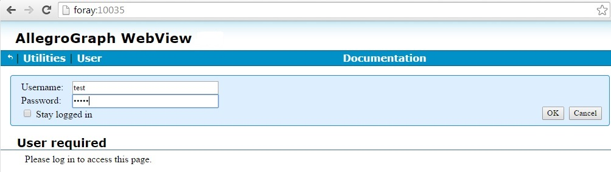
For this simple tutorial, log in using the name and password of the AllegroGraph superuser you created during server installation. If you accepted the defaults when you installed AllegroGraph above, the user is "test" with password "xyzzy" (as shown in the illustration though the password is hidden).
Once logged in you can create additional user accounts with different types of access and privileges. See Managing Users for details.
The tutorial directory
At the top level of the AllegroGraph installation (along with directories like bin/ and lib/), there is a tutorial/ directory. This directory contains various example files used in some of the examples found in the documention, including the kennedy.ntriples file (used below in this document) and the PhoneCalls.ttl.gz file used in the n-dimensional geospatial example in N-dimensional Geospatial Usage Guide and Example. When, on an AGWebView repository page, you choose Load and Delete Data | Import RDF | from an uploaded file (indicated by the red arrow in the illustration, which shows the PhoneCalls geospatial example), the Choose Files dialog that is displayed starts in the last directory it displayed. But the first time it is invoked, it displays the tutorial/ directory in the server distribution directory (assuming that directory is in the expected place -- if there is a problem, the dialog will display the server distribution root directory).
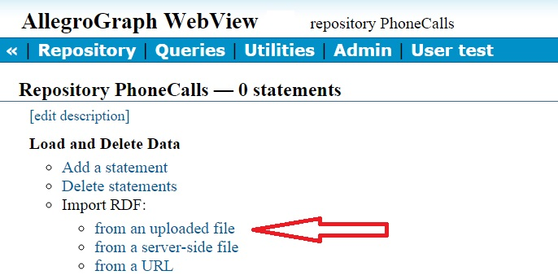
It is possible you do not have access to that directory for some reason. If that is the case, ask the system administrator to provide you with or otherwise make available a copy of the directory.
Creating a Database
After you have successfully logged in, the browser will look like:
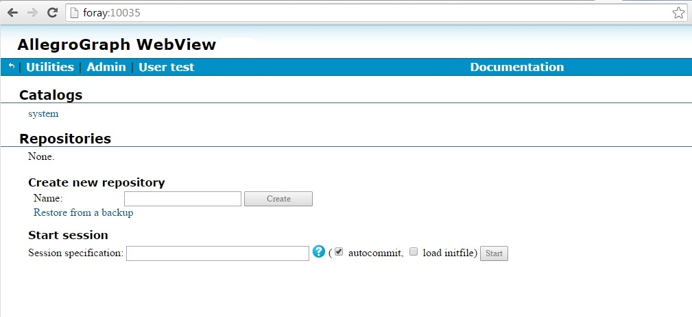
There are no repositories as we have just opened AllegroGraph for the first time (if data had been stored, we would see the one or more repositories holding the data).
Data are organized into repositories which are organized into catalogs. There is one initial catalog: the root catalog. We are going to create a respository named kennedy and populate it with data available in an example file included with the distribution. In the Create new repository field under Repositories, enter kennedy and click the Create button. The kennedy repository will be created and the browser will show the kennedy repository page:
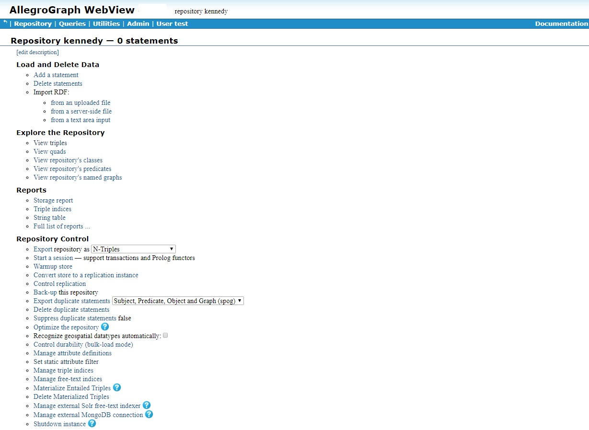
Displayed is information about the repository (such as there is no data -- 0 statements -- as yet) and various commands for managing the data. We want to load data from the kennedy.ntriples file, found in the tutorial/ directory of the server installation -- see the tutorial directory section above). AllegroGraph supports various file formats for data (see agload). The ntriples format has one triple (subject, predicate, object) per line, with each line ending in a period. Here are the first few lines:
<http://www.franz.com/simple#person1> <http://www.w3.org/1999/02/22-rdf-syntax-ns#type> <http://www.franz.com/simple#person> .
<http://www.franz.com/simple#person1> <http://www.franz.com/simple#first-name> "Joseph" .
<http://www.franz.com/simple#person1> <http://www.franz.com/simple#middle-initial> "Patrick" .
<http://www.franz.com/simple#person1> <http://www.franz.com/simple#last-name> "Kennedy" .
<http://www.franz.com/simple#person1> <http://www.franz.com/simple#suffix> "none" .
<http://www.franz.com/simple#person1> <http://www.franz.com/simple#alma-mater> <http://www.franz.com/simple#Harvard> . We load this data by clicking on Load and Delete Data | Import RDF: | from an uploaded file (indicated by the red arrow in the illustration). A dialog pane appears near the top of the WebView page allowing you to specify the file or files to be loaded.
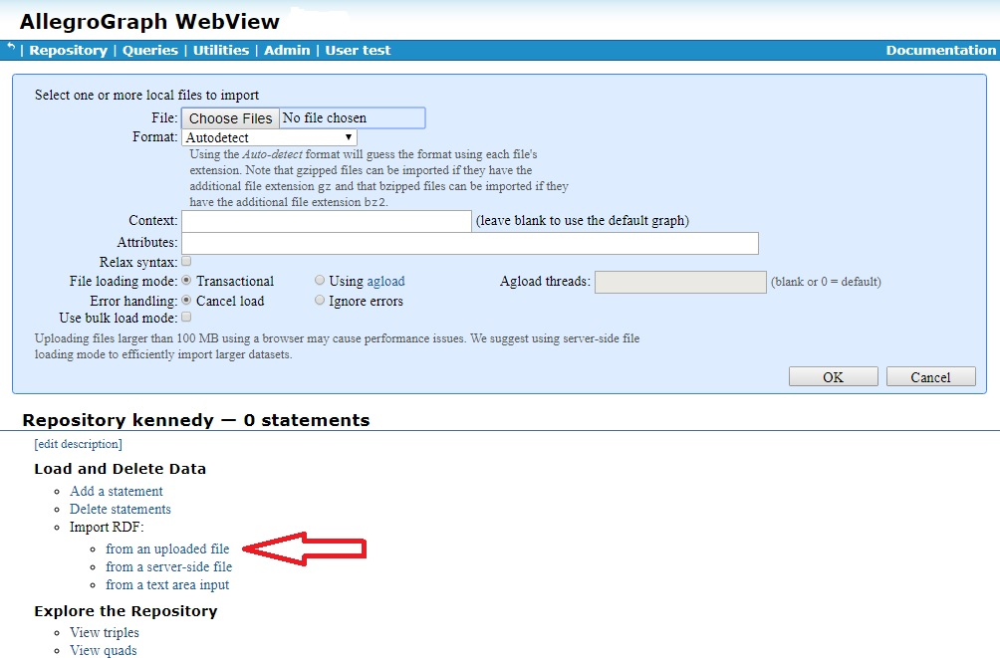
This dialog has lots of options. See the description for details. Here we will just specify a file to load, leaving all options at their default values.
Click on the Choose Files button. It will display the last directory it displayed but the first time it is invoked, it displays the tutorial/ directory in the server installation directory (assuming that directory is in the expected place -- if there is a problem, the dialog will display the server distribution root directory).
Specify the file in the tutorial/ directory named kennedy.ntriples. Then click the Ok button on the lower right of the dialog pane. (If the system cannot access the tutorial/ directory for any reason, you will, of course, have to make the file accessible in some other fashion.)
Once the triples in the file are loaded, we see Repository kennedy now has 1,214 statements (triples).
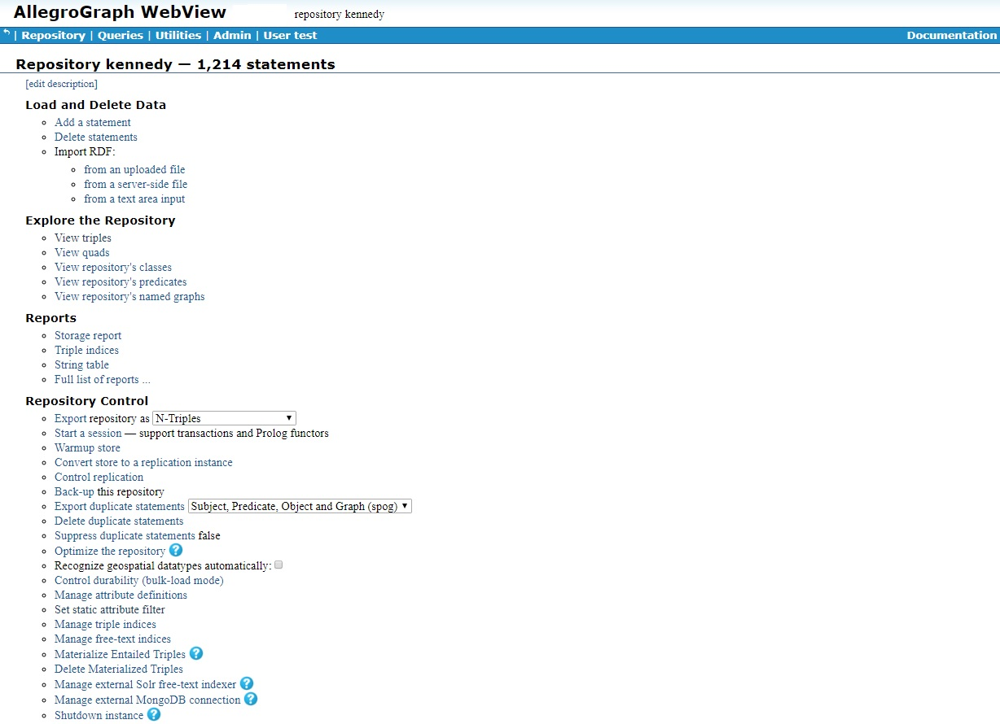
Now we have created a repository and loaded data. We should now back it up. Choose Back-up this repository from the Repository Control options (circled in red in the illustration). The dialog pane shown at the top of the screen appears. Enter the path and filename (an absolute directory pathname leaves no ambiguity about where the file will be put; the file will be saved to the server machine) in the text box and click Ok.
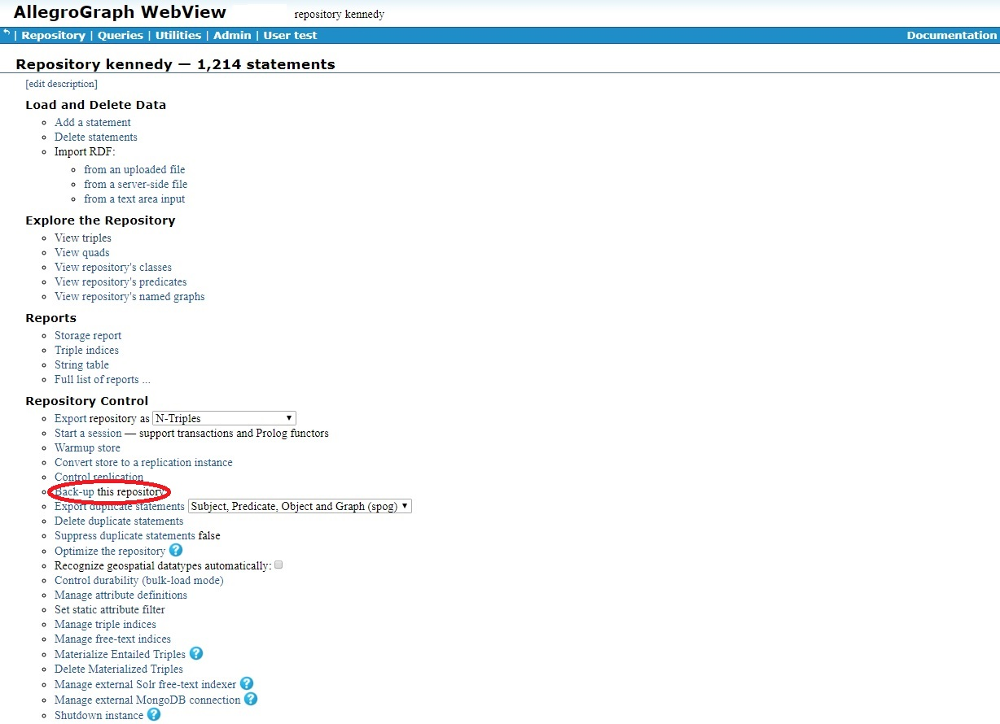
Other operations on the repository
As the illustration shows, there are many commands you can invoke to manipulate the database and the data it contains. These are described in the Respository Overview Page section of AGWebView.
Queries
Once data is loaded, you want to query the database. The kennedy database contains public data on relationships among and characteristics of individuals in the family of Joseph Kennedy, father of US President John F. Kennedy. Queries might include the following:
- Who among Joseph and his descendents are males and went to Harvard University and what are their professions?
- Who is the oldest living descendent (at least when the database was created)?
Queries can be formulated using SPARQL, a query language adapted to RDF databases. Let us take a very simple query: the people described in the kennedy database are labeled <http://www.franz.com/simple#personN> and <http://www.franz.com/simple#person1> is Joseph Patrick Kennedy, the patriarch of the family. You can see this by examining the first lines of the data file.
So, what are the predicates and objects of all triples whose subject is <http://www.franz.com/simple#person1>? The SPARQL query
select ?p ?o WHERE {<http://www.franz.com/simple#person1> ?p ?o} will tell, as shown in the following illustration (we selected New from the Queries menu on the menu bar, and typed the query into the Edit Query box and clicked the Execute button).
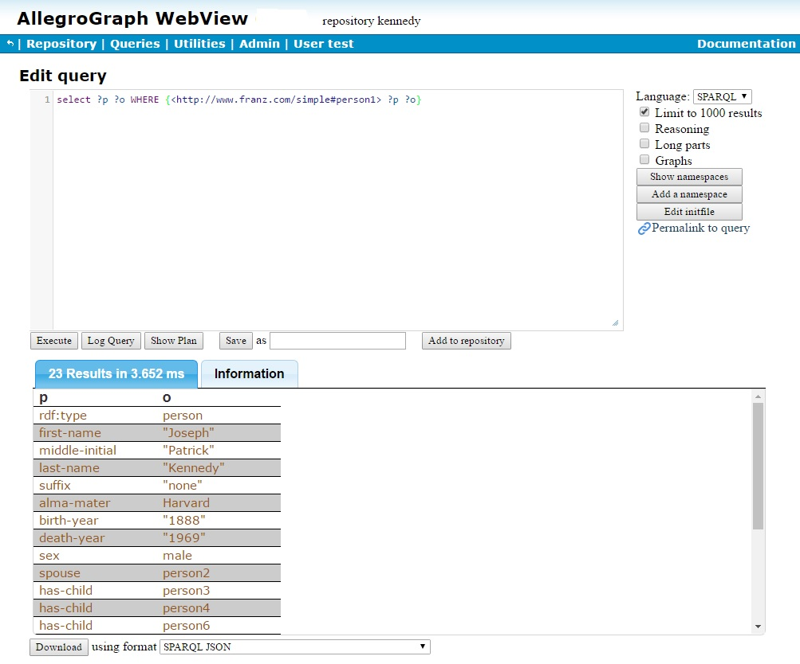
Who are the males among Joseph Kennedy and his descendents that went to Harvard University and what are their respective professions? Here is the SPARQL query:
PREFIX o: <http://www.franz.com/simple#>
SELECT ?x ?p {
?x o:sex o:male ;
o:alma-mater o:Harvard ;
o:profession ?p .
}
ORDER BY ?p
And the answer is 13, as shown by the displayed query (we also display their professions):
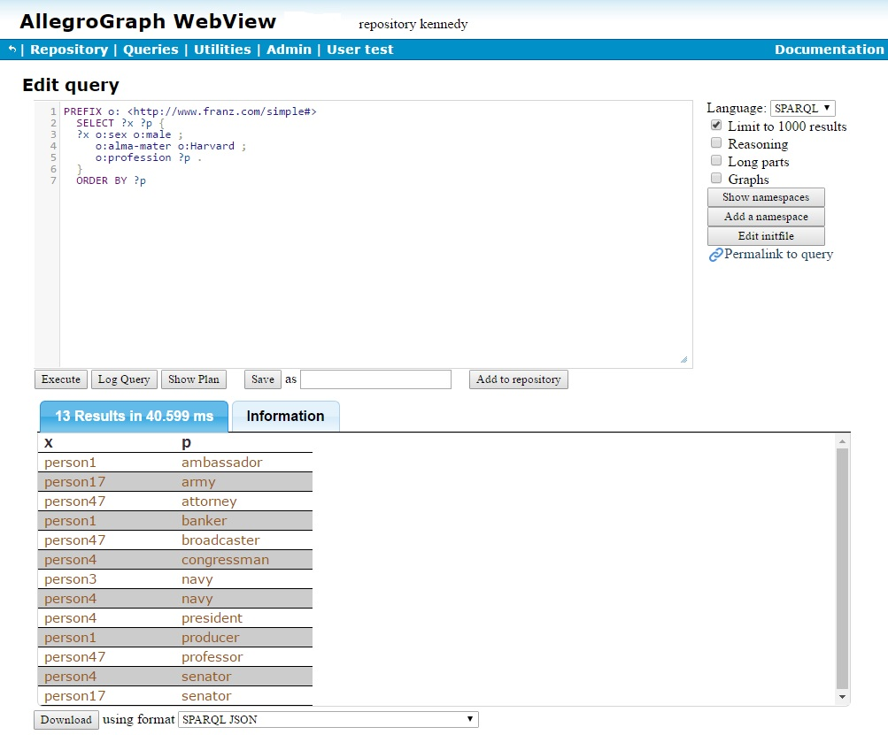
Who is the oldest living person among Joseph Kennedy and his descendents (at the time the databse was created, several years ago)? Here is the SPARQL query. Note the use of an OPTIONAL clause. That produces result bindings for persons with a birth-year whether or not they also have a death-year. The FILTER clause then filters out any results which do have a death-year.
PREFIX o: <http://www.franz.com/simple#>
SELECT ?person ?birthYear {
?person o:birth-year ?birthYear
OPTIONAL {
?person o:death-year ?deathYear
}
FILTER( !bound( ?deathYear ) )
} order by ?birthYear
LIMIT 1
Since we are only interested in the oldest, we add a LIMIT 1 clause to the SPARQL query. We run the query and find the result is person10:
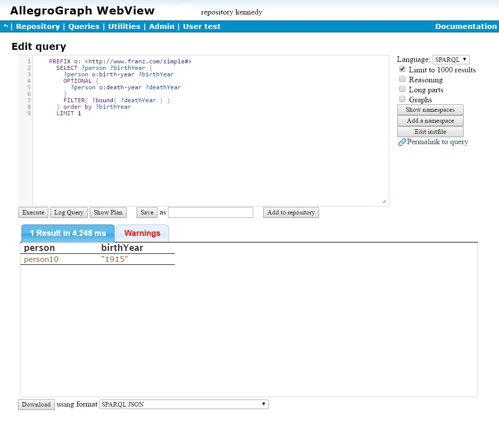
And who is person10? We could use the same query as we did above for person1:
select ?p ?o WHERE {<http://www.franz.com/simple#person10> ?p ?o} and get all the triples where person10 is the subject but we are only interested in the names (first, middle and last), so we restrict the query to that (the middle name is shown in the misnamed middle-initial field):
PREFIX o: <http://www.franz.com/simple#>
SELECT ?fn ?mn ?ln
WHERE {o:person10 o:first-name ?fn ;
o:middle-initial ?mn ;
o:last-name ?ln .
} 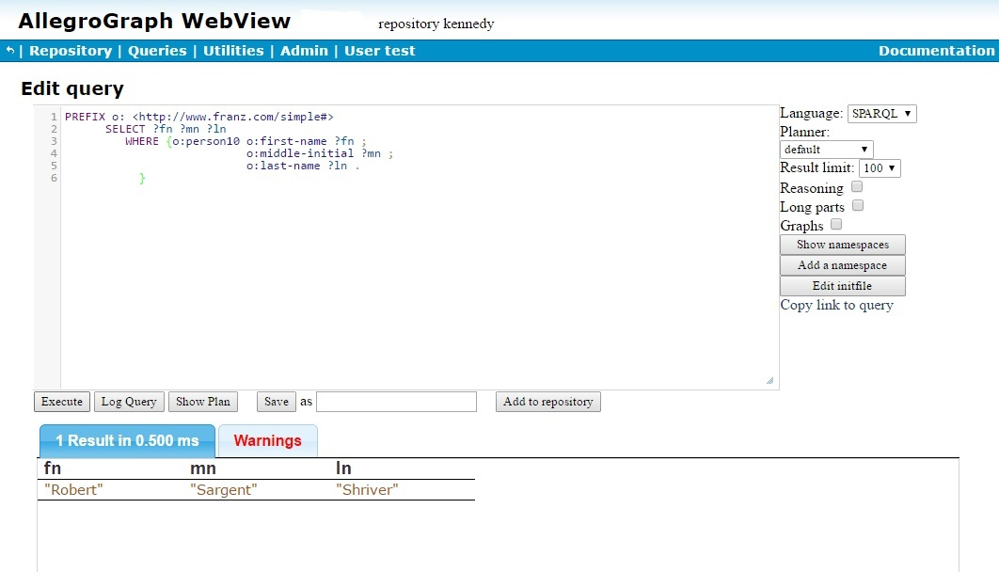
person10 is Robert Sargent Shriver, commonly known as Sargent Shriver, first director of the Peace Corps. (Mr. Shriver actually died in 2011, but that was after the database was constructed.)
Note there is a Warnings tab instead of an Information tab. Warnings about the query are displayed there if there are any (if there are no warnings, the tab is labeled Information). If we look at the warnings we see:
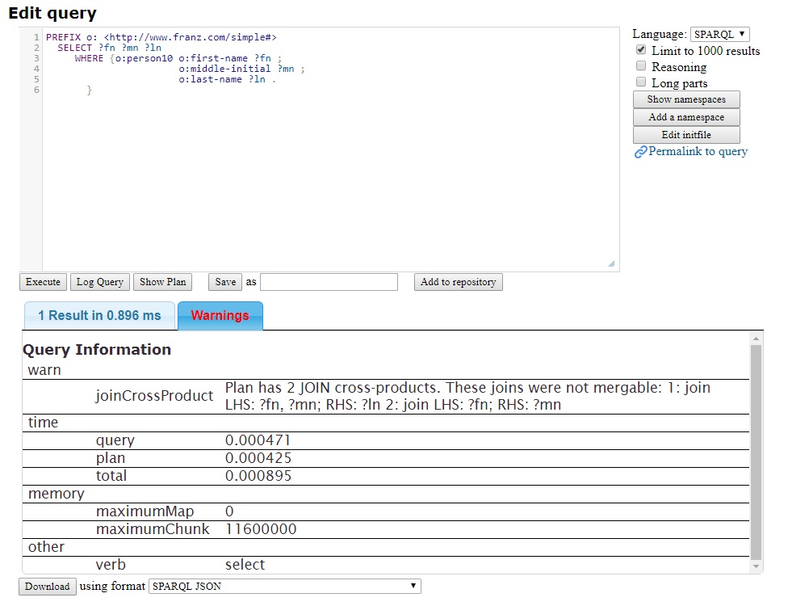
You are warned that the query has a cross product (which means a join with no common variables, which can take a long time and can produce voluminous results). The remainder of the display is the information.
Though it is not obvious, technically it is true that the query has a cross product, as the plan for the query, displayed by the Show Plan button, is
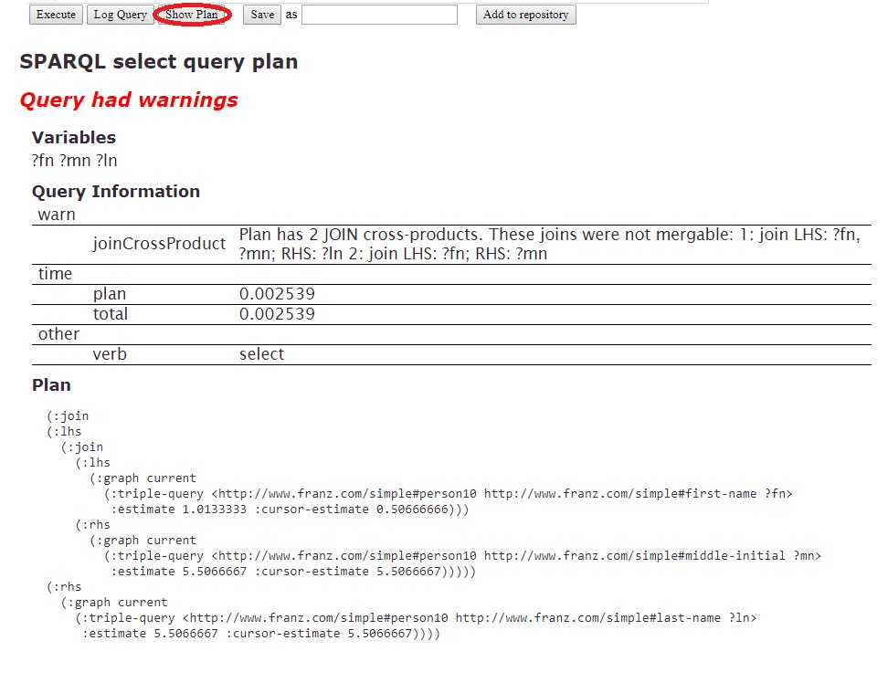
Indeed there are no shared variables. Even though it signals a warning, it can be argued the warning should be suppressed if either the LHS or the RHS has only one row since in that case there is not likely to be a problem. At this printing, the warning is signaled. That might change in the future. But is is useful to understand that warnings can appear and they can be seen, if there are any, by clicking Show Plan prior to execution.
This has been a brief introduction to SPARQL but it does show its flexibility and power. There are more examples in the SPARQL Tutorial.
Other documentation
If you have followed the steps in this document, you should have AllegroGraph installed, at least one database loaded, and should have asked and received answers about that database. See the documentation index to learn more about AllegroGraph.